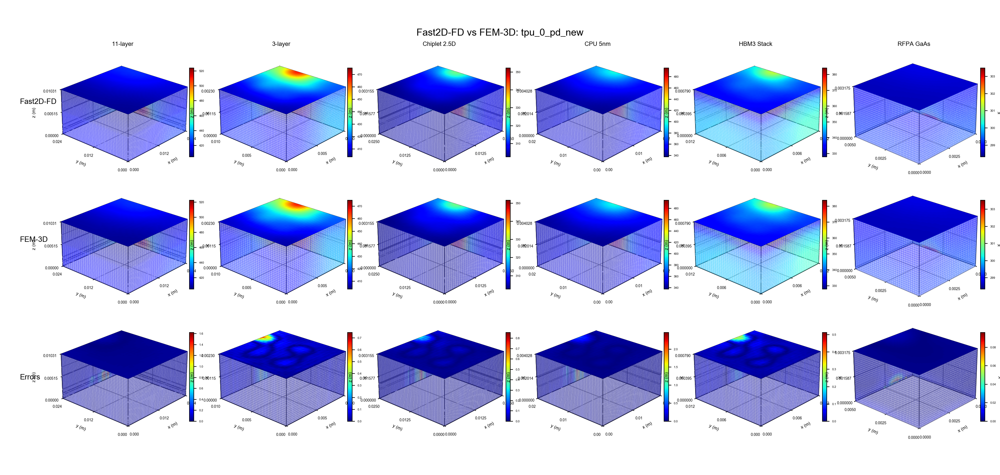
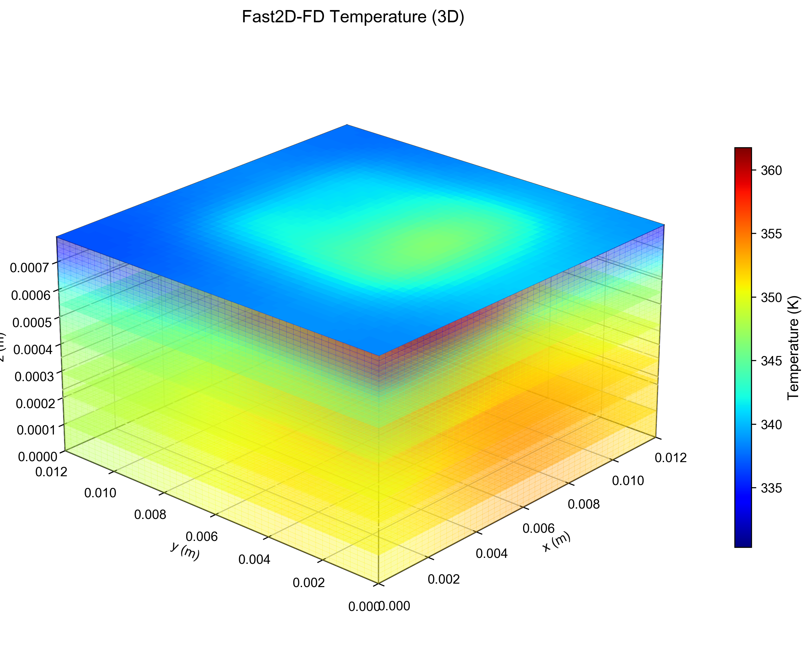

ChipletTherm computes FEM-grade temperature maps for 2.5D and 3D heterogeneous-integration stacks in milliseconds — so you can sweep thousands of floorplans, power maps, and stack-ups, or run thermal management in real time, where a single 3D-FEM run used to be your whole budget.
Vertical stacking of dies, interposers, and memory turns thermal behavior into a first-order design constraint — and with accelerators now pushing 700–1200 W, the tools accurate enough to trust are far too slow to keep in the loop.
Heterogeneous 2.5D/3D stacks raise thermal resistance and trap heat between layers. Logic chiplets next to stacked HBM create localized hotspots — and peak junction temperature decides whether a design ships.
A full 3D finite-element solve discretizes the whole volume into millions of unknowns. That's fine for one sign-off, but impossible for the thousands of evaluations a design-space search — or a runtime control loop — demands.
Floorplanning, power delivery, packaging co-design, and runtime management all need temperature feedback per iteration. Without a fast, accurate model, thermal gets checked last — when it's most expensive to fix.
ChipletTherm pairs a fast spectral solver with a full 3D-FEM reference, covering both steady-state sign-off and time-dependent response on the very same chiplet model.
Full-chip, full-stack temperature fields for 2.5D and 3D assemblies — every die, layer, and interposer resolved through-thickness in 3D from a single power and floorplan description.
Drive the model with arbitrary power waveforms and get the full temperature history at every node — thermal transients, throttling, and workload bursts, step by step.
Steady-state solves land in ~0.02 s and transients in well under a second — up to 1410× faster than 3D FEM (static) and a mean 1036× (transient). Fast enough for ~50 Hz runtime thermal management.
ChipletTherm reaches 0.21 K mean RMSE against a consistent-mass 3D-FEM reference — more accurate than the SOV and GIT semi-analytical baselines — across 30 cases including measured Snapdragon and Coral-TPU power maps.
Validated to 11 layers — 2.5D interposers, 3D logic stacks, HBM, CPU and RF packages — with per-layer anisotropic materials, interface thermal resistance, heat capacity, and convective surface cooling.
Lateral frequency modes solve independently, so workloads batch naturally across multi-core CPUs and GPUs — built to evaluate thousands of candidate designs or stream live temperature estimates.
ChipletTherm doesn't stop at thermal. Its companion sign-off engine EMspice 3 is fully agentic-flow-aware — a first-class CLI and a structured data interface let any agent-driven EDA flow invoke temperature-aware IR-drop and electromigration (EM) sign-off, consuming ChipletTherm's thermal maps and returning machine-readable results straight back into the loop.
Sign-off becomes a callable step inside your agentic flow, not a hand-run GUI tool.
The speed comes from analyzing the chip in a form where the physics nearly separates. ChipletTherm breaks the in-plane temperature field into independent spectral (cosine) modes, resolves each one down through the layer stack, and reassembles the full 3D map. It ships in two solver modes that span the speed–accuracy tradeoff: ChipletTherm (TASTA), the thickness-resolved, most-accurate solver, and ChipletTherm-2D (TASTA-2D), the fast, layer-averaged one. TASTA / TASTA-2D are the names used in our paper and figures.
The in-plane temperature pattern is broken into a set of simple, wave-like spatial modes using a spectral transform. This is the key move: it turns one large, tightly-coupled 3D problem into many small, completely independent ones.
Each mode is resolved straight down through the physical stack — every die, bonding layer, and interposer — using their real per-layer materials, directional conductivity, and interface resistances.
Because the modes are completely independent, they are all solved at once — directly, in a single pass — which is exactly what makes the analysis fast and a natural fit for multi-core CPU and GPU hardware.
The solved modes recombine into the complete temperature field — the steady-state map directly, or advanced step-by-step through time for transient analysis.
Layer-averaged: one in-plane field per physical layer, coupled by effective interface resistances. The lowest-cost thermal estimate.
Thickness-resolved: a layer-aware 1D finite-difference scheme recovers the full 3D field. Best accuracy of every method tested.
Full 3D FEM grinds through one giant system with millions of unknowns. The spectral approach instead splits the chip into hundreds of simple, independent thermal patterns — each tiny and solvable on its own, all at the same time. Replacing one enormous problem with hundreds of trivial ones, solved in parallel, is where the 100–1000× speedup comes from — with no loss of accuracy versus FEM.
A full 3D finite-element solver ships alongside as the ground-truth reference, and every ChipletTherm result is validated against it.
Every number below is benchmarked against a consistent-mass 3D-FEM reference: 18 static cases (6 real designs × 3 power inputs, up to 11 layers) and 12 transient cases (100 time steps each), spanning CPU, GPU, TPU, HBM, and RF power profiles.
| Method | Avg RMSE | Runtime |
|---|---|---|
| FEM-3D reference | — | 12.7 s |
| SOV baseline | 0.225 K | 0.047 s |
| GIT baseline | 0.219 K | 0.348 s |
| ChipletTherm-2D TASTA-2D · fastest | 0.444 K | 0.016 s |
| ChipletTherm TASTA · most accurate | 0.214 K | 0.020 s |


| Design family | RMSE | Mean error |
|---|---|---|
| Chiplet 2.5D | 0.72 K | 0.12% |
| CPU 5nm | 1.42 K | 0.24% |
| 3-layer 3D | 1.52 K | 0.23% |
| All 12 cases | 1.22 K | 0.18% |
ChipletTherm is in active development. Request access or a walkthrough on your own 2.5D/3D chiplet designs, and we'll get you set up.